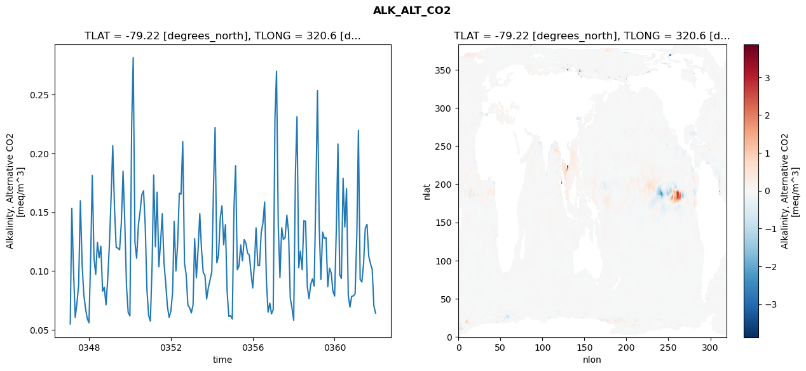
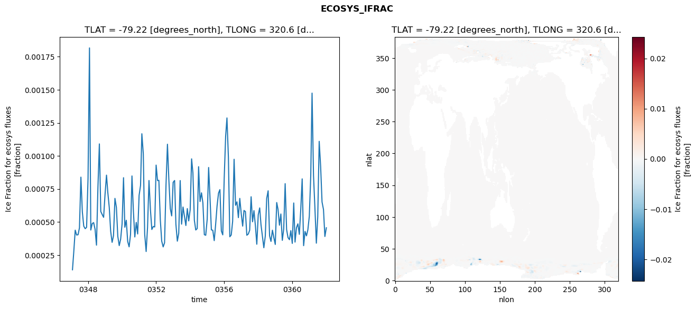
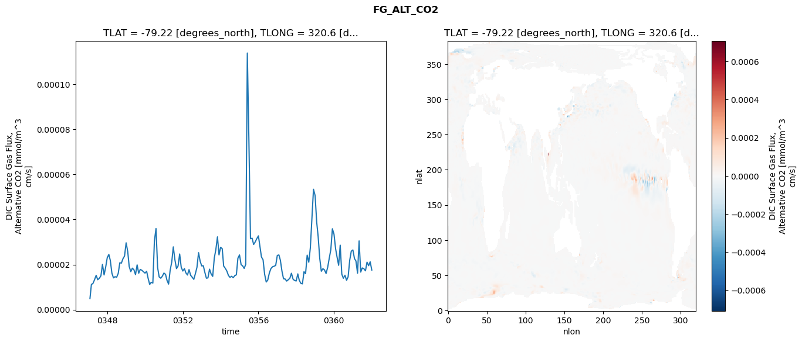
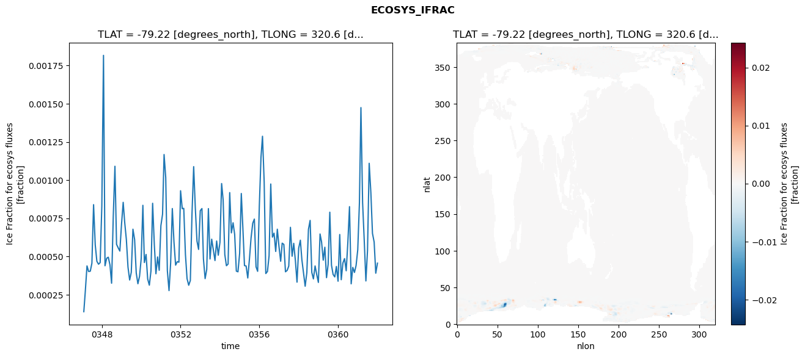
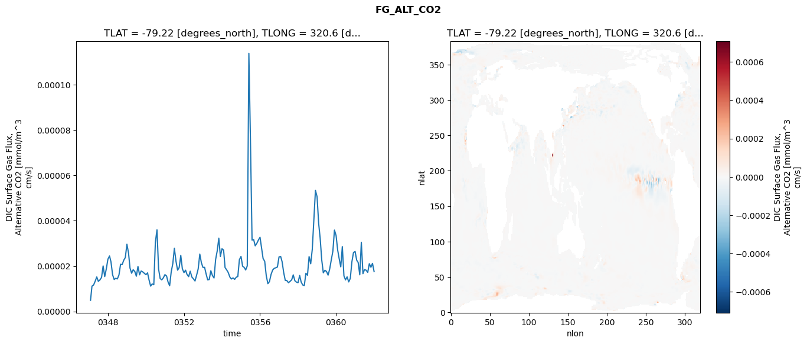
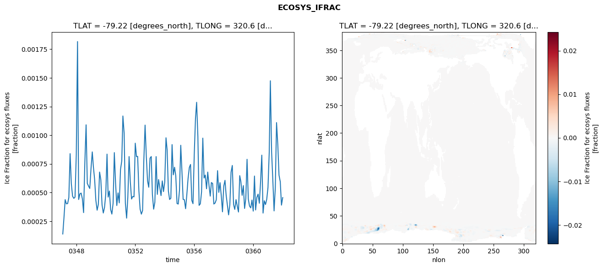
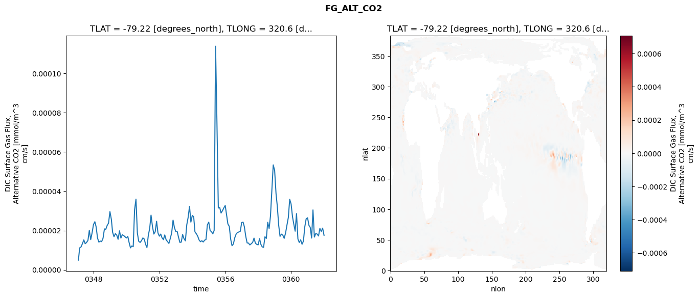

glb-dor_North_Atlantic_basin_023_1999-01-01_00092#
Simulation details#
Case: smyle.cdr-atlas-v0.glb-dor_North_Atlantic_basin_023_1999-01-01_00092.001
Basin: North_Atlantic_basin
Polygon: 23.0
Start date: 1999-01
Show code cell source Hide code cell source
import xarray as xr
import matplotlib.pyplot as plt
Show code cell source Hide code cell source
zarr_store = "/path/to/zarr/store"
# Parameters
zarr_store = "/global/cfs/projectdirs/m4746/Projects/Ocean-CDR-Atlas-v0/data/validation/smyle.cdr-atlas-v0.glb-dor_North_Atlantic_basin_023_1999-01-01_00092.001.validation.zarr"
Show code cell source Hide code cell source
%%time
ds_o = xr.open_zarr(zarr_store).compute()
ds_o
CPU times: user 634 ms, sys: 448 ms, total: 1.08 s
Wall time: 1.3 s
<xarray.Dataset> Size: 2MB
Dimensions: (nlat: 384, nlon: 320, time: 180)
Coordinates:
TLAT float64 8B -79.22
TLONG float64 8B 320.6
ULAT float64 8B -78.95
ULONG float64 8B 321.1
* time (time) object 1kB 0347-02-01 00:00:00 ... 0362-01-01 0...
z_t float32 4B 500.0
Dimensions without coordinates: nlat, nlon
Data variables:
ALK_ALT_CO2_diff (nlat, nlon) float32 492kB nan nan nan ... nan nan nan
ALK_ALT_CO2_rmse (time) float64 1kB 0.055 0.1532 ... 0.07058 0.06415
DIC_ALT_CO2_diff (nlat, nlon) float32 492kB nan nan nan ... nan nan nan
DIC_ALT_CO2_rmse (time) float64 1kB 0.05709 0.1492 ... 0.1389 0.1169
ECOSYS_IFRAC_diff (nlat, nlon) float32 492kB nan nan nan ... nan nan nan
ECOSYS_IFRAC_rmse (time) float64 1kB 0.0001383 0.0002736 ... 0.0004559
FG_ALT_CO2_diff (nlat, nlon) float32 492kB nan nan nan ... nan nan nan
FG_ALT_CO2_rmse (time) float64 1kB 4.92e-06 1.117e-05 ... 1.757e-05xarray.Dataset
- nlat: 384
- nlon: 320
- time: 180
- TLAT()float64-79.22
- long_name :
- array of t-grid latitudes
- units :
- degrees_north
array(-79.22052261)
- TLONG()float64320.6
- long_name :
- array of t-grid longitudes
- units :
- degrees_east
array(320.56250892)
- ULAT()float64-78.95
- long_name :
- array of u-grid latitudes
- units :
- degrees_north
array(-78.95289509)
- ULONG()float64321.1
- long_name :
- array of u-grid longitudes
- units :
- degrees_east
array(321.12500894)
- time(time)object0347-02-01 00:00:00 ... 0362-01-...
- bounds :
- time_bound
- long_name :
- time
array([cftime.DatetimeNoLeap(347, 2, 1, 0, 0, 0, 0, has_year_zero=True), cftime.DatetimeNoLeap(347, 3, 1, 0, 0, 0, 0, has_year_zero=True), cftime.DatetimeNoLeap(347, 4, 1, 0, 0, 0, 0, has_year_zero=True), cftime.DatetimeNoLeap(347, 5, 1, 0, 0, 0, 0, has_year_zero=True), cftime.DatetimeNoLeap(347, 6, 1, 0, 0, 0, 0, has_year_zero=True), cftime.DatetimeNoLeap(347, 7, 1, 0, 0, 0, 0, has_year_zero=True), cftime.DatetimeNoLeap(347, 8, 1, 0, 0, 0, 0, has_year_zero=True), cftime.DatetimeNoLeap(347, 9, 1, 0, 0, 0, 0, has_year_zero=True), cftime.DatetimeNoLeap(347, 10, 1, 0, 0, 0, 0, has_year_zero=True), cftime.DatetimeNoLeap(347, 11, 1, 0, 0, 0, 0, has_year_zero=True), cftime.DatetimeNoLeap(347, 12, 1, 0, 0, 0, 0, has_year_zero=True), cftime.DatetimeNoLeap(348, 1, 1, 0, 0, 0, 0, has_year_zero=True), cftime.DatetimeNoLeap(348, 2, 1, 0, 0, 0, 0, has_year_zero=True), cftime.DatetimeNoLeap(348, 3, 1, 0, 0, 0, 0, has_year_zero=True), cftime.DatetimeNoLeap(348, 4, 1, 0, 0, 0, 0, has_year_zero=True), cftime.DatetimeNoLeap(348, 5, 1, 0, 0, 0, 0, has_year_zero=True), cftime.DatetimeNoLeap(348, 6, 1, 0, 0, 0, 0, has_year_zero=True), cftime.DatetimeNoLeap(348, 7, 1, 0, 0, 0, 0, has_year_zero=True), cftime.DatetimeNoLeap(348, 8, 1, 0, 0, 0, 0, has_year_zero=True), cftime.DatetimeNoLeap(348, 9, 1, 0, 0, 0, 0, has_year_zero=True), cftime.DatetimeNoLeap(348, 10, 1, 0, 0, 0, 0, has_year_zero=True), cftime.DatetimeNoLeap(348, 11, 1, 0, 0, 0, 0, has_year_zero=True), cftime.DatetimeNoLeap(348, 12, 1, 0, 0, 0, 0, has_year_zero=True), cftime.DatetimeNoLeap(349, 1, 1, 0, 0, 0, 0, has_year_zero=True), cftime.DatetimeNoLeap(349, 2, 1, 0, 0, 0, 0, has_year_zero=True), cftime.DatetimeNoLeap(349, 3, 1, 0, 0, 0, 0, has_year_zero=True), cftime.DatetimeNoLeap(349, 4, 1, 0, 0, 0, 0, has_year_zero=True), cftime.DatetimeNoLeap(349, 5, 1, 0, 0, 0, 0, has_year_zero=True), cftime.DatetimeNoLeap(349, 6, 1, 0, 0, 0, 0, has_year_zero=True), cftime.DatetimeNoLeap(349, 7, 1, 0, 0, 0, 0, has_year_zero=True), cftime.DatetimeNoLeap(349, 8, 1, 0, 0, 0, 0, has_year_zero=True), cftime.DatetimeNoLeap(349, 9, 1, 0, 0, 0, 0, has_year_zero=True), cftime.DatetimeNoLeap(349, 10, 1, 0, 0, 0, 0, has_year_zero=True), cftime.DatetimeNoLeap(349, 11, 1, 0, 0, 0, 0, has_year_zero=True), cftime.DatetimeNoLeap(349, 12, 1, 0, 0, 0, 0, has_year_zero=True), cftime.DatetimeNoLeap(350, 1, 1, 0, 0, 0, 0, has_year_zero=True), cftime.DatetimeNoLeap(350, 2, 1, 0, 0, 0, 0, has_year_zero=True), cftime.DatetimeNoLeap(350, 3, 1, 0, 0, 0, 0, has_year_zero=True), cftime.DatetimeNoLeap(350, 4, 1, 0, 0, 0, 0, has_year_zero=True), cftime.DatetimeNoLeap(350, 5, 1, 0, 0, 0, 0, has_year_zero=True), cftime.DatetimeNoLeap(350, 6, 1, 0, 0, 0, 0, has_year_zero=True), cftime.DatetimeNoLeap(350, 7, 1, 0, 0, 0, 0, has_year_zero=True), cftime.DatetimeNoLeap(350, 8, 1, 0, 0, 0, 0, has_year_zero=True), cftime.DatetimeNoLeap(350, 9, 1, 0, 0, 0, 0, has_year_zero=True), cftime.DatetimeNoLeap(350, 10, 1, 0, 0, 0, 0, has_year_zero=True), cftime.DatetimeNoLeap(350, 11, 1, 0, 0, 0, 0, has_year_zero=True), cftime.DatetimeNoLeap(350, 12, 1, 0, 0, 0, 0, has_year_zero=True), cftime.DatetimeNoLeap(351, 1, 1, 0, 0, 0, 0, has_year_zero=True), cftime.DatetimeNoLeap(351, 2, 1, 0, 0, 0, 0, has_year_zero=True), cftime.DatetimeNoLeap(351, 3, 1, 0, 0, 0, 0, has_year_zero=True), cftime.DatetimeNoLeap(351, 4, 1, 0, 0, 0, 0, has_year_zero=True), cftime.DatetimeNoLeap(351, 5, 1, 0, 0, 0, 0, has_year_zero=True), cftime.DatetimeNoLeap(351, 6, 1, 0, 0, 0, 0, has_year_zero=True), cftime.DatetimeNoLeap(351, 7, 1, 0, 0, 0, 0, has_year_zero=True), cftime.DatetimeNoLeap(351, 8, 1, 0, 0, 0, 0, has_year_zero=True), cftime.DatetimeNoLeap(351, 9, 1, 0, 0, 0, 0, has_year_zero=True), cftime.DatetimeNoLeap(351, 10, 1, 0, 0, 0, 0, has_year_zero=True), cftime.DatetimeNoLeap(351, 11, 1, 0, 0, 0, 0, has_year_zero=True), cftime.DatetimeNoLeap(351, 12, 1, 0, 0, 0, 0, has_year_zero=True), cftime.DatetimeNoLeap(352, 1, 1, 0, 0, 0, 0, has_year_zero=True), cftime.DatetimeNoLeap(352, 2, 1, 0, 0, 0, 0, has_year_zero=True), cftime.DatetimeNoLeap(352, 3, 1, 0, 0, 0, 0, has_year_zero=True), cftime.DatetimeNoLeap(352, 4, 1, 0, 0, 0, 0, has_year_zero=True), cftime.DatetimeNoLeap(352, 5, 1, 0, 0, 0, 0, has_year_zero=True), cftime.DatetimeNoLeap(352, 6, 1, 0, 0, 0, 0, has_year_zero=True), cftime.DatetimeNoLeap(352, 7, 1, 0, 0, 0, 0, has_year_zero=True), cftime.DatetimeNoLeap(352, 8, 1, 0, 0, 0, 0, has_year_zero=True), cftime.DatetimeNoLeap(352, 9, 1, 0, 0, 0, 0, has_year_zero=True), cftime.DatetimeNoLeap(352, 10, 1, 0, 0, 0, 0, has_year_zero=True), cftime.DatetimeNoLeap(352, 11, 1, 0, 0, 0, 0, has_year_zero=True), cftime.DatetimeNoLeap(352, 12, 1, 0, 0, 0, 0, has_year_zero=True), cftime.DatetimeNoLeap(353, 1, 1, 0, 0, 0, 0, has_year_zero=True), cftime.DatetimeNoLeap(353, 2, 1, 0, 0, 0, 0, has_year_zero=True), cftime.DatetimeNoLeap(353, 3, 1, 0, 0, 0, 0, has_year_zero=True), cftime.DatetimeNoLeap(353, 4, 1, 0, 0, 0, 0, has_year_zero=True), cftime.DatetimeNoLeap(353, 5, 1, 0, 0, 0, 0, has_year_zero=True), cftime.DatetimeNoLeap(353, 6, 1, 0, 0, 0, 0, has_year_zero=True), cftime.DatetimeNoLeap(353, 7, 1, 0, 0, 0, 0, has_year_zero=True), cftime.DatetimeNoLeap(353, 8, 1, 0, 0, 0, 0, has_year_zero=True), cftime.DatetimeNoLeap(353, 9, 1, 0, 0, 0, 0, has_year_zero=True), cftime.DatetimeNoLeap(353, 10, 1, 0, 0, 0, 0, has_year_zero=True), cftime.DatetimeNoLeap(353, 11, 1, 0, 0, 0, 0, has_year_zero=True), cftime.DatetimeNoLeap(353, 12, 1, 0, 0, 0, 0, has_year_zero=True), cftime.DatetimeNoLeap(354, 1, 1, 0, 0, 0, 0, has_year_zero=True), cftime.DatetimeNoLeap(354, 2, 1, 0, 0, 0, 0, has_year_zero=True), cftime.DatetimeNoLeap(354, 3, 1, 0, 0, 0, 0, has_year_zero=True), cftime.DatetimeNoLeap(354, 4, 1, 0, 0, 0, 0, has_year_zero=True), cftime.DatetimeNoLeap(354, 5, 1, 0, 0, 0, 0, has_year_zero=True), cftime.DatetimeNoLeap(354, 6, 1, 0, 0, 0, 0, has_year_zero=True), cftime.DatetimeNoLeap(354, 7, 1, 0, 0, 0, 0, has_year_zero=True), cftime.DatetimeNoLeap(354, 8, 1, 0, 0, 0, 0, has_year_zero=True), cftime.DatetimeNoLeap(354, 9, 1, 0, 0, 0, 0, has_year_zero=True), cftime.DatetimeNoLeap(354, 10, 1, 0, 0, 0, 0, has_year_zero=True), cftime.DatetimeNoLeap(354, 11, 1, 0, 0, 0, 0, has_year_zero=True), cftime.DatetimeNoLeap(354, 12, 1, 0, 0, 0, 0, has_year_zero=True), cftime.DatetimeNoLeap(355, 1, 1, 0, 0, 0, 0, has_year_zero=True), cftime.DatetimeNoLeap(355, 2, 1, 0, 0, 0, 0, has_year_zero=True), cftime.DatetimeNoLeap(355, 3, 1, 0, 0, 0, 0, has_year_zero=True), cftime.DatetimeNoLeap(355, 4, 1, 0, 0, 0, 0, has_year_zero=True), cftime.DatetimeNoLeap(355, 5, 1, 0, 0, 0, 0, has_year_zero=True), cftime.DatetimeNoLeap(355, 6, 1, 0, 0, 0, 0, has_year_zero=True), cftime.DatetimeNoLeap(355, 7, 1, 0, 0, 0, 0, has_year_zero=True), cftime.DatetimeNoLeap(355, 8, 1, 0, 0, 0, 0, has_year_zero=True), cftime.DatetimeNoLeap(355, 9, 1, 0, 0, 0, 0, has_year_zero=True), cftime.DatetimeNoLeap(355, 10, 1, 0, 0, 0, 0, has_year_zero=True), cftime.DatetimeNoLeap(355, 11, 1, 0, 0, 0, 0, has_year_zero=True), cftime.DatetimeNoLeap(355, 12, 1, 0, 0, 0, 0, has_year_zero=True), cftime.DatetimeNoLeap(356, 1, 1, 0, 0, 0, 0, has_year_zero=True), cftime.DatetimeNoLeap(356, 2, 1, 0, 0, 0, 0, has_year_zero=True), cftime.DatetimeNoLeap(356, 3, 1, 0, 0, 0, 0, has_year_zero=True), cftime.DatetimeNoLeap(356, 4, 1, 0, 0, 0, 0, has_year_zero=True), cftime.DatetimeNoLeap(356, 5, 1, 0, 0, 0, 0, has_year_zero=True), cftime.DatetimeNoLeap(356, 6, 1, 0, 0, 0, 0, has_year_zero=True), cftime.DatetimeNoLeap(356, 7, 1, 0, 0, 0, 0, has_year_zero=True), cftime.DatetimeNoLeap(356, 8, 1, 0, 0, 0, 0, has_year_zero=True), cftime.DatetimeNoLeap(356, 9, 1, 0, 0, 0, 0, has_year_zero=True), cftime.DatetimeNoLeap(356, 10, 1, 0, 0, 0, 0, has_year_zero=True), cftime.DatetimeNoLeap(356, 11, 1, 0, 0, 0, 0, has_year_zero=True), cftime.DatetimeNoLeap(356, 12, 1, 0, 0, 0, 0, has_year_zero=True), cftime.DatetimeNoLeap(357, 1, 1, 0, 0, 0, 0, has_year_zero=True), cftime.DatetimeNoLeap(357, 2, 1, 0, 0, 0, 0, has_year_zero=True), cftime.DatetimeNoLeap(357, 3, 1, 0, 0, 0, 0, has_year_zero=True), cftime.DatetimeNoLeap(357, 4, 1, 0, 0, 0, 0, has_year_zero=True), cftime.DatetimeNoLeap(357, 5, 1, 0, 0, 0, 0, has_year_zero=True), cftime.DatetimeNoLeap(357, 6, 1, 0, 0, 0, 0, has_year_zero=True), cftime.DatetimeNoLeap(357, 7, 1, 0, 0, 0, 0, has_year_zero=True), cftime.DatetimeNoLeap(357, 8, 1, 0, 0, 0, 0, has_year_zero=True), cftime.DatetimeNoLeap(357, 9, 1, 0, 0, 0, 0, has_year_zero=True), cftime.DatetimeNoLeap(357, 10, 1, 0, 0, 0, 0, has_year_zero=True), cftime.DatetimeNoLeap(357, 11, 1, 0, 0, 0, 0, has_year_zero=True), cftime.DatetimeNoLeap(357, 12, 1, 0, 0, 0, 0, has_year_zero=True), cftime.DatetimeNoLeap(358, 1, 1, 0, 0, 0, 0, has_year_zero=True), cftime.DatetimeNoLeap(358, 2, 1, 0, 0, 0, 0, has_year_zero=True), cftime.DatetimeNoLeap(358, 3, 1, 0, 0, 0, 0, has_year_zero=True), cftime.DatetimeNoLeap(358, 4, 1, 0, 0, 0, 0, has_year_zero=True), cftime.DatetimeNoLeap(358, 5, 1, 0, 0, 0, 0, has_year_zero=True), cftime.DatetimeNoLeap(358, 6, 1, 0, 0, 0, 0, has_year_zero=True), cftime.DatetimeNoLeap(358, 7, 1, 0, 0, 0, 0, has_year_zero=True), cftime.DatetimeNoLeap(358, 8, 1, 0, 0, 0, 0, has_year_zero=True), cftime.DatetimeNoLeap(358, 9, 1, 0, 0, 0, 0, has_year_zero=True), cftime.DatetimeNoLeap(358, 10, 1, 0, 0, 0, 0, has_year_zero=True), cftime.DatetimeNoLeap(358, 11, 1, 0, 0, 0, 0, has_year_zero=True), cftime.DatetimeNoLeap(358, 12, 1, 0, 0, 0, 0, has_year_zero=True), cftime.DatetimeNoLeap(359, 1, 1, 0, 0, 0, 0, has_year_zero=True), cftime.DatetimeNoLeap(359, 2, 1, 0, 0, 0, 0, has_year_zero=True), cftime.DatetimeNoLeap(359, 3, 1, 0, 0, 0, 0, has_year_zero=True), cftime.DatetimeNoLeap(359, 4, 1, 0, 0, 0, 0, has_year_zero=True), cftime.DatetimeNoLeap(359, 5, 1, 0, 0, 0, 0, has_year_zero=True), cftime.DatetimeNoLeap(359, 6, 1, 0, 0, 0, 0, has_year_zero=True), cftime.DatetimeNoLeap(359, 7, 1, 0, 0, 0, 0, has_year_zero=True), cftime.DatetimeNoLeap(359, 8, 1, 0, 0, 0, 0, has_year_zero=True), cftime.DatetimeNoLeap(359, 9, 1, 0, 0, 0, 0, has_year_zero=True), cftime.DatetimeNoLeap(359, 10, 1, 0, 0, 0, 0, has_year_zero=True), cftime.DatetimeNoLeap(359, 11, 1, 0, 0, 0, 0, has_year_zero=True), cftime.DatetimeNoLeap(359, 12, 1, 0, 0, 0, 0, has_year_zero=True), cftime.DatetimeNoLeap(360, 1, 1, 0, 0, 0, 0, has_year_zero=True), cftime.DatetimeNoLeap(360, 2, 1, 0, 0, 0, 0, has_year_zero=True), cftime.DatetimeNoLeap(360, 3, 1, 0, 0, 0, 0, has_year_zero=True), cftime.DatetimeNoLeap(360, 4, 1, 0, 0, 0, 0, has_year_zero=True), cftime.DatetimeNoLeap(360, 5, 1, 0, 0, 0, 0, has_year_zero=True), cftime.DatetimeNoLeap(360, 6, 1, 0, 0, 0, 0, has_year_zero=True), cftime.DatetimeNoLeap(360, 7, 1, 0, 0, 0, 0, has_year_zero=True), cftime.DatetimeNoLeap(360, 8, 1, 0, 0, 0, 0, has_year_zero=True), cftime.DatetimeNoLeap(360, 9, 1, 0, 0, 0, 0, has_year_zero=True), cftime.DatetimeNoLeap(360, 10, 1, 0, 0, 0, 0, has_year_zero=True), cftime.DatetimeNoLeap(360, 11, 1, 0, 0, 0, 0, has_year_zero=True), cftime.DatetimeNoLeap(360, 12, 1, 0, 0, 0, 0, has_year_zero=True), cftime.DatetimeNoLeap(361, 1, 1, 0, 0, 0, 0, has_year_zero=True), cftime.DatetimeNoLeap(361, 2, 1, 0, 0, 0, 0, has_year_zero=True), cftime.DatetimeNoLeap(361, 3, 1, 0, 0, 0, 0, has_year_zero=True), cftime.DatetimeNoLeap(361, 4, 1, 0, 0, 0, 0, has_year_zero=True), cftime.DatetimeNoLeap(361, 5, 1, 0, 0, 0, 0, has_year_zero=True), cftime.DatetimeNoLeap(361, 6, 1, 0, 0, 0, 0, has_year_zero=True), cftime.DatetimeNoLeap(361, 7, 1, 0, 0, 0, 0, has_year_zero=True), cftime.DatetimeNoLeap(361, 8, 1, 0, 0, 0, 0, has_year_zero=True), cftime.DatetimeNoLeap(361, 9, 1, 0, 0, 0, 0, has_year_zero=True), cftime.DatetimeNoLeap(361, 10, 1, 0, 0, 0, 0, has_year_zero=True), cftime.DatetimeNoLeap(361, 11, 1, 0, 0, 0, 0, has_year_zero=True), cftime.DatetimeNoLeap(361, 12, 1, 0, 0, 0, 0, has_year_zero=True), cftime.DatetimeNoLeap(362, 1, 1, 0, 0, 0, 0, has_year_zero=True)], dtype=object) - z_t()float32500.0
- long_name :
- depth from surface to midpoint of layer
- positive :
- down
- units :
- centimeters
- valid_max :
- 537500.0
- valid_min :
- 500.0
array(500., dtype=float32)
- ALK_ALT_CO2_diff(nlat, nlon)float32nan nan nan nan ... nan nan nan nan
- cell_methods :
- time: mean
- grid_loc :
- 3111
- long_name :
- Alkalinity, Alternative CO2
- units :
- meq/m^3
array([[ nan, nan, nan, ..., nan, nan, nan], [ nan, nan, nan, ..., nan, nan, nan], [0.06469727, 0.0324707 , 0.03222656, ..., nan, nan, nan], ..., [ nan, nan, nan, ..., nan, nan, nan], [ nan, nan, nan, ..., nan, nan, nan], [ nan, nan, nan, ..., nan, nan, nan]], dtype=float32) - ALK_ALT_CO2_rmse(time)float640.055 0.1532 ... 0.07058 0.06415
- cell_methods :
- time: mean
- grid_loc :
- 3111
- long_name :
- Alkalinity, Alternative CO2
- units :
- meq/m^3
array([0.05499839, 0.1532158 , 0.09959138, 0.0605134 , 0.07283608, 0.08828843, 0.15974349, 0.10534271, 0.07985839, 0.06801408, 0.05957828, 0.05597733, 0.11314516, 0.18131334, 0.11093722, 0.09706464, 0.12436078, 0.11129025, 0.12105057, 0.08280454, 0.08616894, 0.07117124, 0.0928615 , 0.12318301, 0.16468516, 0.20659899, 0.15390787, 0.12002767, 0.11946313, 0.11803364, 0.14096946, 0.18487713, 0.14270232, 0.08710441, 0.06483383, 0.06182065, 0.22287527, 0.28157933, 0.12430094, 0.11091232, 0.13905038, 0.15022776, 0.1648311 , 0.16819894, 0.13853065, 0.08370109, 0.06213137, 0.05731171, 0.10614233, 0.18157424, 0.12059031, 0.16696012, 0.10367512, 0.12376838, 0.14870439, 0.10693097, 0.0896727 , 0.06977245, 0.06055939, 0.06570358, 0.08184634, 0.1422681 , 0.09999506, 0.12221844, 0.16622965, 0.16543942, 0.21023474, 0.10687687, 0.09697115, 0.07087087, 0.06884167, 0.06428389, 0.07123167, 0.12758052, 0.09422336, 0.11798145, 0.14880686, 0.11874869, 0.09867421, 0.09622592, 0.07616166, 0.08592519, 0.09239713, 0.09945836, 0.17313718, 0.22211851, 0.10689922, 0.11335018, 0.1452815 , 0.15545456, 0.12234888, 0.13942526, 0.08255254, 0.0613142 , 0.06191318, 0.05922102, 0.15541076, 0.18959973, 0.10101999, 0.10434253, 0.12215236, 0.10867876, 0.12673196, 0.1236324 , 0.11517463, 0.11345847, 0.09812647, 0.0855872 , 0.10691949, 0.13667273, 0.10489424, 0.10458161, 0.13272754, 0.14062819, 0.15872215, 0.09223675, 0.06503723, 0.07268312, 0.06352132, 0.06719081, 0.23005414, 0.26982714, 0.13840467, 0.09445826, 0.13683293, 0.12681393, 0.12839912, 0.14742247, 0.13364412, 0.07719693, 0.06858218, 0.05807429, 0.18291075, 0.23125896, 0.10268349, 0.11677849, 0.10105016, 0.14274602, 0.14233374, 0.08661837, 0.07648513, 0.08867535, 0.09335601, 0.08717291, 0.16755746, 0.25342518, 0.13832646, 0.09286964, 0.13307965, 0.12773426, 0.12827193, 0.08659841, 0.10235889, 0.09841387, 0.0827462 , 0.07872526, 0.13788691, 0.20803825, 0.09699801, 0.09362336, 0.17884774, 0.13744988, 0.17009465, 0.07914675, 0.06927461, 0.07847301, 0.07884051, 0.08064389, 0.13149654, 0.21958895, 0.09291759, 0.09060381, 0.10646289, 0.1363668 , 0.13969189, 0.11274887, 0.10638255, 0.10167652, 0.07057978, 0.06414555]) - DIC_ALT_CO2_diff(nlat, nlon)float32nan nan nan nan ... nan nan nan nan
- cell_methods :
- time: mean
- grid_loc :
- 3111
- long_name :
- Dissolved Inorganic Carbon, Alternative CO2
- units :
- mmol/m^3
array([[ nan, nan, nan, ..., nan, nan, nan], [ nan, nan, nan, ..., nan, nan, nan], [0.07641602, 0.04101562, 0.04467773, ..., nan, nan, nan], ..., [ nan, nan, nan, ..., nan, nan, nan], [ nan, nan, nan, ..., nan, nan, nan], [ nan, nan, nan, ..., nan, nan, nan]], dtype=float32) - DIC_ALT_CO2_rmse(time)float640.05709 0.1492 ... 0.1389 0.1169
- cell_methods :
- time: mean
- grid_loc :
- 3111
- long_name :
- Dissolved Inorganic Carbon, Alternative CO2
- units :
- mmol/m^3
array([0.05708839, 0.14920581, 0.11384313, 0.08886129, 0.0962734 , 0.12046759, 0.17859313, 0.14954393, 0.12937401, 0.11628368, 0.1332815 , 0.14163933, 0.17748406, 0.21587205, 0.16205261, 0.13969363, 0.15705839, 0.15782862, 0.17017222, 0.16302073, 0.16459251, 0.15852441, 0.18240775, 0.22027294, 0.23525996, 0.24148704, 0.18895927, 0.15288519, 0.15311329, 0.15667252, 0.17344922, 0.21161747, 0.1746463 , 0.12451054, 0.11679027, 0.11771959, 0.22250352, 0.26674607, 0.1353118 , 0.12492288, 0.15203587, 0.17347998, 0.19424774, 0.19168155, 0.16594668, 0.11850032, 0.09764579, 0.0963288 , 0.12778314, 0.18846944, 0.13468486, 0.17206101, 0.13409503, 0.15509392, 0.17424788, 0.14971179, 0.13890112, 0.12689312, 0.11645876, 0.11800805, 0.13143504, 0.16658149, 0.13579864, 0.15077415, 0.18492231, 0.18209509, 0.22330809, 0.13974442, 0.14212317, 0.11749823, 0.11546259, 0.12006693, 0.12445814, 0.15508111, 0.12034941, 0.1307373 , 0.15599514, 0.14230907, 0.13319567, 0.16498809, 0.17606523, 0.18297316, 0.1930089 , 0.20990133, 0.24434469, 0.2518632 , 0.16066677, 0.15655194, 0.16786568, 0.17454938, 0.15339521, 0.16621625, 0.13122132, 0.11617963, 0.11946383, 0.11085389, 0.17355 , 0.21408239, 0.15199261, 0.15891187, 0.18991951, 0.17852452, 0.16971987, 0.16835808, 0.17846515, 0.20493469, 0.20995927, 0.19282564, 0.20212415, 0.22110446, 0.18449951, 0.14769623, 0.16202736, 0.17924302, 0.18861944, 0.14571174, 0.14347672, 0.14149549, 0.14437018, 0.1465777 , 0.25144541, 0.27353942, 0.16537775, 0.13307551, 0.16070928, 0.15972774, 0.15868009, 0.17391618, 0.15603786, 0.12963912, 0.12821539, 0.1052873 , 0.18595744, 0.22386369, 0.12017272, 0.12706125, 0.12628909, 0.18757108, 0.2066733 , 0.19523908, 0.2260535 , 0.27033101, 0.29211184, 0.2408004 , 0.262918 , 0.30905173, 0.20060972, 0.13991545, 0.16219873, 0.1619837 , 0.16624681, 0.17094851, 0.19238529, 0.20846327, 0.18091496, 0.16007065, 0.19469082, 0.23887549, 0.14614716, 0.12660533, 0.18629532, 0.16294875, 0.18440445, 0.12144203, 0.11440471, 0.14149807, 0.12964799, 0.13852841, 0.16772274, 0.24158823, 0.13755403, 0.12532242, 0.13107778, 0.1596285 , 0.16444855, 0.15130295, 0.14700125, 0.15481916, 0.1389014 , 0.11687166]) - ECOSYS_IFRAC_diff(nlat, nlon)float32nan nan nan nan ... nan nan nan nan
- cell_methods :
- time: mean
- grid_loc :
- 2110
- long_name :
- Ice Fraction for ecosys fluxes
- units :
- fraction
array([[ nan, nan, nan, ..., nan, nan, nan], [ nan, nan, nan, ..., nan, nan, nan], [ 1.2218952e-04, -8.6247921e-05, -3.4695864e-04, ..., nan, nan, nan], ..., [ nan, nan, nan, ..., nan, nan, nan], [ nan, nan, nan, ..., nan, nan, nan], [ nan, nan, nan, ..., nan, nan, nan]], dtype=float32) - ECOSYS_IFRAC_rmse(time)float640.0001383 0.0002736 ... 0.0004559
- cell_methods :
- time: mean
- grid_loc :
- 2110
- long_name :
- Ice Fraction for ecosys fluxes
- units :
- fraction
array([0.00013826, 0.00027355, 0.00043798, 0.00040133, 0.00040332, 0.00045577, 0.00083898, 0.00057519, 0.00046827, 0.00044897, 0.0004596 , 0.00083029, 0.00181658, 0.00043898, 0.00048816, 0.00049482, 0.00044427, 0.00032457, 0.00076133, 0.00109037, 0.00057927, 0.00055568, 0.00053502, 0.00071057, 0.00085412, 0.00072331, 0.00061005, 0.00043038, 0.00034581, 0.00039585, 0.00067821, 0.00061056, 0.00039172, 0.00032114, 0.00036952, 0.00048557, 0.00083472, 0.00046012, 0.00051278, 0.00035249, 0.00031171, 0.00040479, 0.00084802, 0.00057869, 0.0003865 , 0.00049656, 0.00040927, 0.00070115, 0.00077649, 0.00116727, 0.00101613, 0.00040667, 0.00027628, 0.00045883, 0.00081357, 0.00059301, 0.00044294, 0.00046586, 0.00046224, 0.00093004, 0.00081263, 0.00081498, 0.00051412, 0.00035493, 0.00031123, 0.00034248, 0.00078006, 0.00108794, 0.00081954, 0.0006006 , 0.00054601, 0.00079949, 0.0008136 , 0.00048349, 0.00035467, 0.00041456, 0.00081312, 0.00048344, 0.00061292, 0.00054146, 0.00047306, 0.00060105, 0.00050814, 0.00059217, 0.00097723, 0.000871 , 0.00051239, 0.00043927, 0.00045011, 0.00091801, 0.00065424, 0.00072027, 0.00064399, 0.00040381, 0.00039933, 0.00051978, 0.00091205, 0.00069564, 0.00043984, 0.00043759, 0.00035879, 0.0004799 , 0.00062145, 0.00071776, 0.00074459, 0.00043173, 0.0004024 , 0.00083015, 0.00114994, 0.00128688, 0.00098812, 0.00038787, 0.00040155, 0.0005046 , 0.00097422, 0.00062611, 0.00065222, 0.00053269, 0.00067822, 0.0005633 , 0.00046854, 0.00058682, 0.00057863, 0.00039942, 0.00040849, 0.00043687, 0.00069063, 0.00050136, 0.00058577, 0.00047146, 0.00033154, 0.00055446, 0.0006062 , 0.00047869, 0.00039079, 0.00030497, 0.00039391, 0.00067715, 0.0007358 , 0.00039524, 0.00035275, 0.00043771, 0.0003819 , 0.00032988, 0.00064691, 0.00059522, 0.00047547, 0.00056018, 0.00036099, 0.00044706, 0.00078964, 0.00044269, 0.00038198, 0.00036589, 0.00043434, 0.00033768, 0.00064354, 0.00034755, 0.00045715, 0.00048588, 0.00040619, 0.00058981, 0.00082586, 0.00032064, 0.0004283 , 0.00039506, 0.00044058, 0.0005432 , 0.0008503 , 0.00147454, 0.00085197, 0.0006074 , 0.00033946, 0.00053908, 0.00110989, 0.00091906, 0.00065111, 0.00059426, 0.00039004, 0.00045594]) - FG_ALT_CO2_diff(nlat, nlon)float32nan nan nan nan ... nan nan nan nan
- cell_methods :
- time: mean
- grid_loc :
- 2110
- long_name :
- DIC Surface Gas Flux, Alternative CO2
- units :
- mmol/m^3 cm/s
array([[ nan, nan, nan, ..., nan, nan, nan], [ nan, nan, nan, ..., nan, nan, nan], [-1.5287924e-08, 6.1883611e-08, 2.3369466e-07, ..., nan, nan, nan], ..., [ nan, nan, nan, ..., nan, nan, nan], [ nan, nan, nan, ..., nan, nan, nan], [ nan, nan, nan, ..., nan, nan, nan]], dtype=float32) - FG_ALT_CO2_rmse(time)float644.92e-06 1.117e-05 ... 1.757e-05
- cell_methods :
- time: mean
- grid_loc :
- 2110
- long_name :
- DIC Surface Gas Flux, Alternative CO2
- units :
- mmol/m^3 cm/s
array([4.91973203e-06, 1.11690792e-05, 1.16671639e-05, 1.33005675e-05, 1.52300925e-05, 1.32819881e-05, 1.39166122e-05, 1.50196531e-05, 2.00703847e-05, 1.53857496e-05, 1.87526920e-05, 2.30413080e-05, 2.44875314e-05, 2.18539769e-05, 1.61788913e-05, 1.41039192e-05, 1.46319870e-05, 1.43509633e-05, 1.60751922e-05, 2.08114548e-05, 2.06387424e-05, 2.25885246e-05, 2.37719822e-05, 2.96324649e-05, 2.57205624e-05, 1.91453640e-05, 1.68535584e-05, 1.83987812e-05, 1.76498596e-05, 1.55402002e-05, 1.98552000e-05, 1.61559556e-05, 1.78606628e-05, 1.74437272e-05, 1.68203801e-05, 1.62071697e-05, 1.70234656e-05, 1.39621409e-05, 1.11765142e-05, 1.21461115e-05, 1.17966967e-05, 3.05316401e-05, 3.59725093e-05, 1.86679228e-05, 1.45177093e-05, 1.39405384e-05, 1.48239966e-05, 1.62415044e-05, 1.56488435e-05, 1.30358495e-05, 1.13420220e-05, 1.74331008e-05, 2.11173963e-05, 2.78355734e-05, 2.21197299e-05, 1.82051219e-05, 1.93574587e-05, 2.46955441e-05, 1.88215013e-05, 1.71411939e-05, 1.81967593e-05, 1.63205142e-05, 1.53634789e-05, 1.77672561e-05, 1.52245867e-05, 1.43937878e-05, 1.34433826e-05, 1.60118798e-05, 1.87739149e-05, 2.52771820e-05, 2.15252318e-05, 1.93997105e-05, 1.94670299e-05, 1.66688784e-05, 1.39547505e-05, 1.40876331e-05, 1.79662247e-05, 1.58747162e-05, 1.47541304e-05, 2.29302687e-05, ... 1.13788595e-04, 7.57381476e-05, 3.14583985e-05, 3.17027155e-05, 2.89037960e-05, 3.00609479e-05, 3.14784115e-05, 3.27253655e-05, 2.77697211e-05, 2.33560858e-05, 2.21096445e-05, 1.57287960e-05, 1.22597359e-05, 1.31660252e-05, 1.63423270e-05, 1.82665919e-05, 1.90282970e-05, 1.92722570e-05, 1.96192564e-05, 2.40446112e-05, 2.42711583e-05, 2.19339438e-05, 1.70791095e-05, 1.37004005e-05, 1.35997456e-05, 1.26801266e-05, 1.32829062e-05, 1.39623689e-05, 1.61502791e-05, 1.35479231e-05, 1.29456528e-05, 1.27147553e-05, 1.58793297e-05, 1.30364895e-05, 1.16750799e-05, 1.14438450e-05, 1.68503160e-05, 1.59873756e-05, 2.41772377e-05, 2.10425839e-05, 2.73818822e-05, 4.07591905e-05, 5.33921013e-05, 5.06244924e-05, 3.87741115e-05, 3.24524078e-05, 2.27082046e-05, 1.70361865e-05, 1.81665158e-05, 1.76438573e-05, 1.60307662e-05, 1.87756410e-05, 2.27365010e-05, 2.66438326e-05, 3.58838112e-05, 3.35040816e-05, 2.70339870e-05, 2.33566697e-05, 1.96749196e-05, 2.86021116e-05, 1.57146676e-05, 1.39232040e-05, 1.52615995e-05, 1.30256500e-05, 1.45709501e-05, 2.19420462e-05, 2.59368702e-05, 2.64748833e-05, 2.26166913e-05, 2.16001442e-05, 1.61662339e-05, 3.04809028e-05, 1.66607368e-05, 1.84953976e-05, 1.81886425e-05, 1.72252792e-05, 2.10716230e-05, 1.95081798e-05, 2.12254836e-05, 1.75732405e-05])
- timePandasIndex
PandasIndex(CFTimeIndex([0347-02-01 00:00:00, 0347-03-01 00:00:00, 0347-04-01 00:00:00, 0347-05-01 00:00:00, 0347-06-01 00:00:00, 0347-07-01 00:00:00, 0347-08-01 00:00:00, 0347-09-01 00:00:00, 0347-10-01 00:00:00, 0347-11-01 00:00:00, ... 0361-04-01 00:00:00, 0361-05-01 00:00:00, 0361-06-01 00:00:00, 0361-07-01 00:00:00, 0361-08-01 00:00:00, 0361-09-01 00:00:00, 0361-10-01 00:00:00, 0361-11-01 00:00:00, 0361-12-01 00:00:00, 0362-01-01 00:00:00], dtype='object', length=180, calendar='noleap', freq='MS'))
Show code cell source Hide code cell source
variables = [v[:-5] for v in ds_o.variables if "_rmse" in v]
Show code cell source Hide code cell source
plt.rcParams.update({'figure.max_open_warning': 0})
for v in variables:
fig, axs = plt.subplots(1, 2, figsize=(15, 6))
ds_o[f"{v}_rmse"].plot(ax=axs[0])
ds_o[f"{v}_diff"].plot(ax=axs[1])
plt.suptitle(v, fontweight="bold")

 




